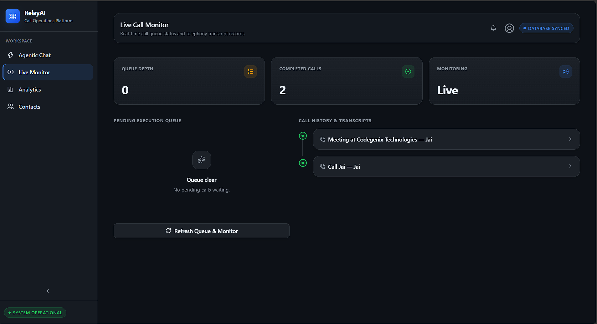
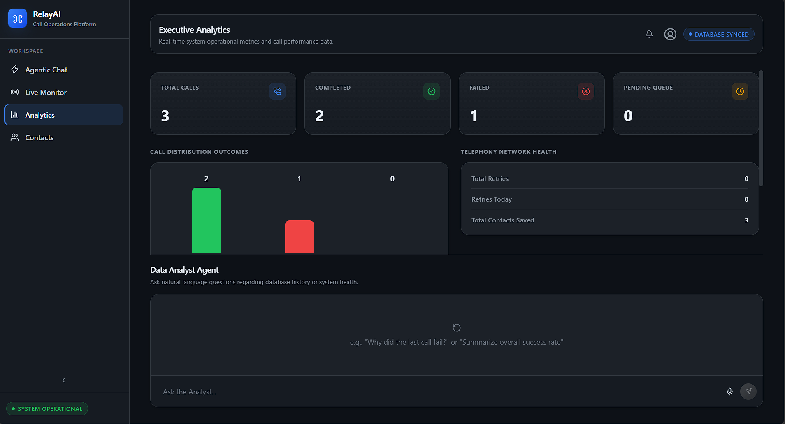
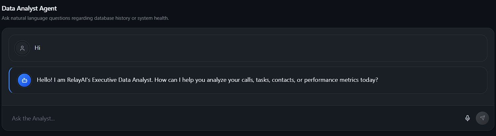

Day 29 - Relay AI: AI Agents, Live Monitoring & Analytics
Training Company: Auribises Technologies
Trainer: Mr. Ishant Kumar
Session Overview
Today's development focused on integrating Relay AI's intelligent features into a unified platform. The frontend and backend were connected to provide real-time communication between users, AI agents, Firestore, and external services. The application was enhanced with live call monitoring, executive analytics, AI-powered insights, and automated conversation tracking, transforming Relay AI into a complete intelligent call operations platform.
Agentic Workspace
The Agentic Workspace became the central interface for interacting with Relay AI. Users can communicate with the AI assistant using natural language to create tasks, manage contacts, schedule phone calls, and retrieve information from the database. Voice input support was also integrated, allowing spoken instructions to be converted into text before being processed by the AI backend.

Live Call Monitoring
A dedicated monitoring dashboard was implemented to display pending calls, completed calls, and conversation history in real time. The application periodically communicates with the backend to refresh the call queue, ensuring that users always see the latest execution status. Completed calls can be expanded to display the full ElevenLabs conversation transcript, providing transparency into every automated interaction.

Executive Analytics Dashboard
Relay AI now includes an Executive Analytics dashboard that presents important system metrics through visual KPI cards and charts. Statistics such as completed calls, pending tasks, failed calls, retry attempts, contact activity, and overall system health are displayed in a clean interface, allowing administrators to quickly evaluate operational performance.

AI Data Analyst
Beyond displaying metrics, an AI-powered Data Analyst assistant was integrated into the analytics page. Instead of manually examining dashboards, users can ask questions in natural language such as identifying failed calls, summarizing system performance, or explaining call statistics. The AI processes these requests and generates meaningful insights based on the stored operational data.

Complete Frontend Integration
By the end of today's session, every major module of Relay AI—including the Agentic Workspace, Contact Directory, Live Monitor, and Executive Analytics—was successfully connected with the FastAPI backend through reusable API services. Global application state was managed using Zustand, while Firestore served as the centralized cloud database for persistent data storage.
Class Activity
- Integrated the Agentic Workspace with the FastAPI backend.
- Implemented live monitoring for pending and completed calls.
- Displayed ElevenLabs conversation transcripts.
- Developed the Executive Analytics dashboard.
- Integrated an AI-powered Data Analyst assistant.
- Connected all frontend modules with backend APIs.
Assignment
Test every module of Relay AI, verify API communication, and prepare the application for final refinement and project completion.
Project Repository
Key Learning Outcomes
- Integrated multiple React modules into a single application.
- Learned real-time frontend and backend synchronization.
- Implemented AI-powered analytics using natural language queries.
- Built dashboards for monitoring application performance.
- Connected Firestore, FastAPI, Gemini AI, and React into one ecosystem.
- Experienced the workflow of developing a production-style AI platform.
Personal Reflection
Today's work demonstrated how individual software components become significantly more powerful when integrated together. Instead of functioning as isolated pages, Relay AI now operates as a complete platform where AI services, cloud databases, real-time monitoring, and modern frontend technologies work together seamlessly. This session strengthened my understanding of full-stack AI application development and highlighted the importance of modular architecture in building scalable systems.
Next Session
The next session will focus on final testing, project refinement, debugging, performance improvements, and concluding the Relay AI development journey.